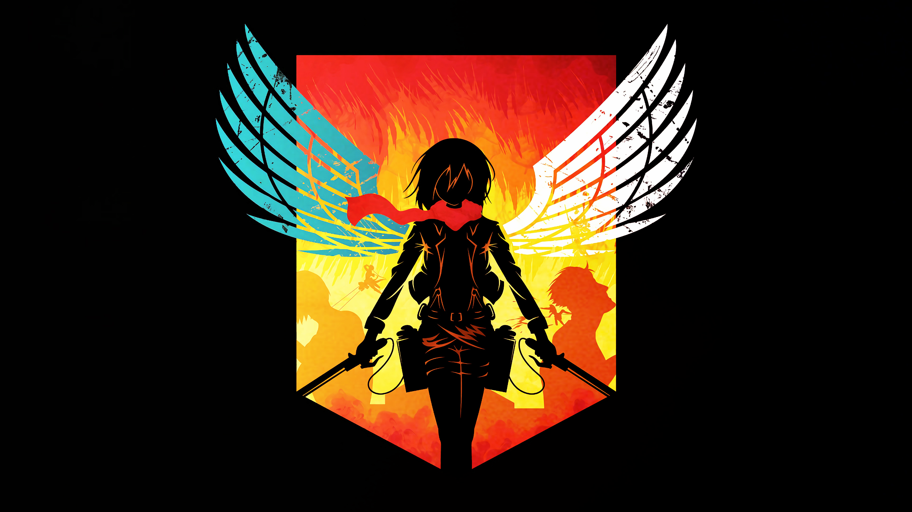

Anime Speech
Erwin Speach

Everything that you thought had meaning: every hope, dream,
or moment of happiness. None of it matters as you lie
bleeding out on the battlefield. None of it changes what a
speeding rock does to a body, we all die. But does that mean
our lives are meaningless? Does that mean that there was no
point in our being born? Would you say that of our slain
comrades? What about their lives? Were they meaningless?...
They were not! Their memory serves as an example to us
all! The courageous fallen! The anguished fallen!
Their lives have meaning because we the living refuse
to forget them!
And as we ride to certain death, we
trust our successors to do the same for us!
Because my
soldiers do not buckle or yield when faced with the cruelty
of this world! My soldiers push forward!
My soldiers
scream out!
My soldiers RAAAAAGE!
Gon Fury
Do you..remember me?
I am Gon Freecs!
I've come
to take back Kite and to meet you!
Wait!
Please!
What the hell?!
What am I supposed to wait for?
Stand up!
We're going outside!
How dare
you?!
After everything you did to Kite?!
Gon!
Why?!
Why?!
What..?!
i don't care
anymore..
if it ends here..
Madara Speach